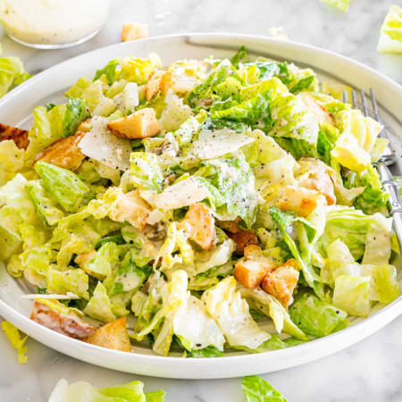

Caesar Salad

Description
Nobody truly knows the origins of this salad but it pairs well with
any Italian meal, or any meal period! Make it quick and easy by
getting store-bought dressing and croutons!
Ingredients
Croutons
- 3 cups torn bread cubes (About half a loaf)
- 2-3 tbsp olive olive
- Salt
- Pepper
Dressing
- 1/4 cup mayonaisse
- 1 clove minced garlic
- 1 tbsp fresh lemon juice
- 1 tsp anchovy paste
- 1 tsp worcestershire sauce
- 1 tsp dijon mustard
Steps
Croutons
- Preheat oven to 375°F.
- Drizzle bread cubes with enough olive oil so they are all very
lightly coated. Toss and add salt.
- Spread out onto a sheet pan and bake until edges turn brown,
7-10 minutes. Keep a close eye on them so they don’t burn, stir
and toss them as needed.
- Set aside while you prepare the rest of the salad. Can be made
several days in advance and stored in an airtight container
Dressing
- Whisk together all ingredients.
- Store in the fridge until ready to use. Can be made at least 1
week in advance.
Salad
- In a large bowl, toss lettuce with enough dressing to lightly
coat the leaves (or to your preference).
- Add croutons and parmesan cheese and toss again.